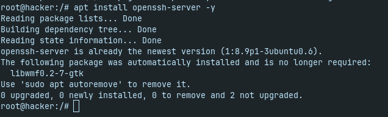
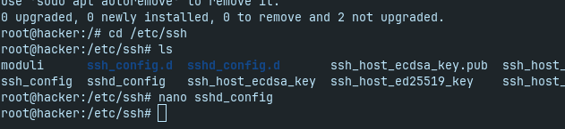
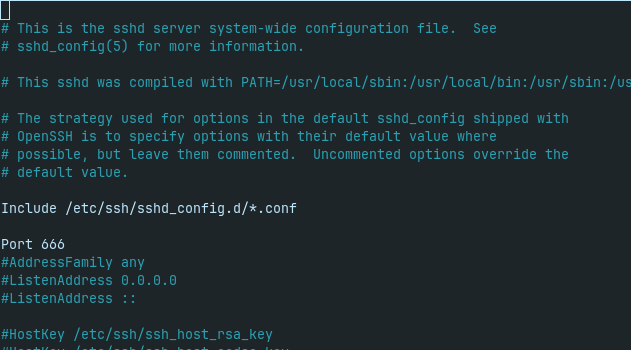
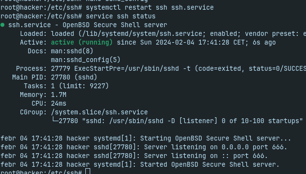

Konfiguráció:
1. Az ssh server feltelepítése:
- Az apt package manager-el feltelepítjük az ssh server-t
apt update -y && apt install openssh-server -y

- 2. Az ssh server configurálása
- Nyílvánvalóan minden informatikus nem szereti a default configokat módosítgatni, de biztonsági szempontból nagyon is hasznosak ezek a dolgok, hiszen ha egy nyílvános portra tesszük az ssh-t sokkal könnyebben fognak minket feltörni, stb.....
cd /etc/ssh
nano sshd_config
Itt módosíthatunk rengeteg beállítást, de mi most csak a portot fogjuk módosítani.


- 3. Config exiting, újraindítás, és felcsatlakozás
Linuxon:
systemctl restart/start ssh ssh.service
vagy
service ssh restart/start
Egyéb eszközön, ahonnan felkívánunk csatlakozni a szerverünkre:
mondjuk windows:
ssh felhasználónév@szerver-név/ip-cím/dns-szervername(domain) -p (ha van külön port)
A mi esetünkben ez így nézne ki:
ssh root@69.69.69.69 -p 666
